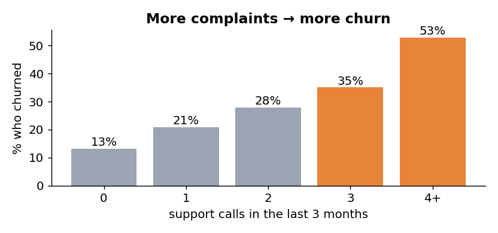
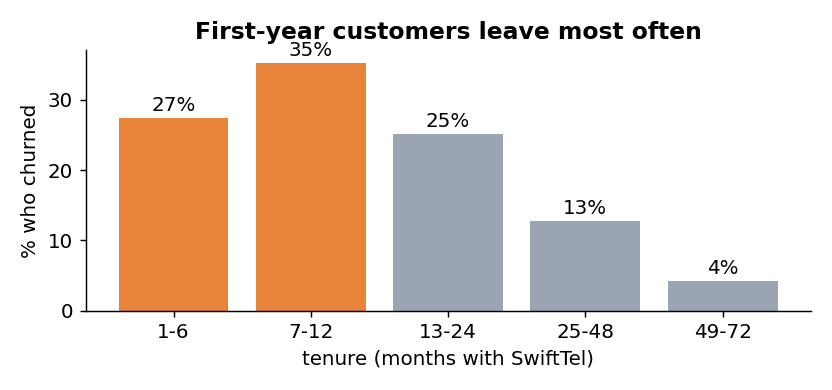
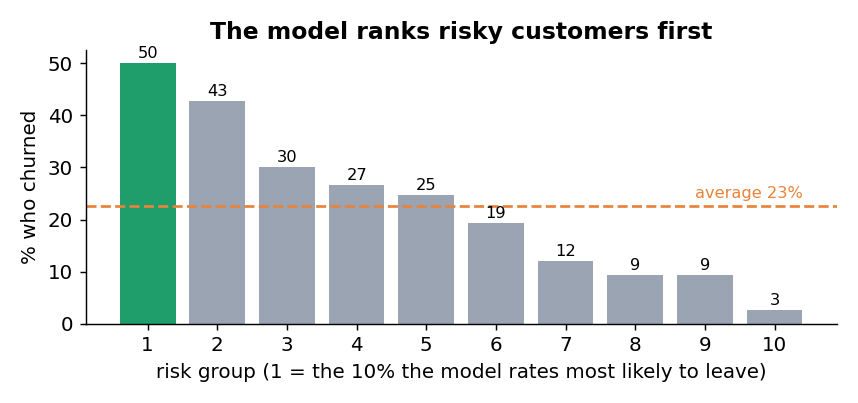
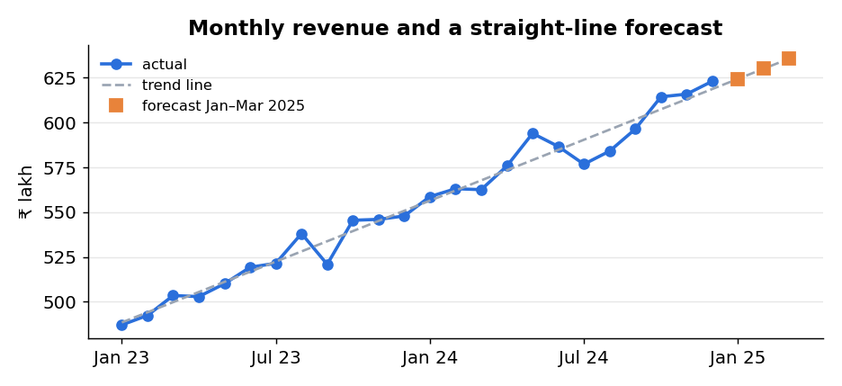

What is predictive analytics?
| Key word | What it means | SwiftTel example |
|---|---|---|
| Historical data | Past cases where we already know the outcome | 1,500 customers on 1 Jan 2025, and whether each left by 31 March |
| Target (outcome) | The thing we want to predict | churned: Yes or No |
| Predictors (features) | Facts we know before the outcome | tenure, plan type, monthly charge, support calls, satisfaction |
| Model | A formula learned from the data that links predictors to the target | logistic regression (Unit 3) |
| Score | The model’s output for one new case: usually a probability | “customer ST10899: 75% likely to leave” |
| Decision | The action taken because of the score | call the customer and offer a ₹300 voucher |
Descriptive, diagnostic, predictive, prescriptive
Analytics is usually split into four types, each answering a harder and more valuable question. Your syllabus names three of them; diagnostic sits between descriptive and predictive. Here is SwiftTel at each step:
| Descriptive | Predictive | Prescriptive | |
|---|---|---|---|
| Question | What happened? | What is likely to happen? | What should we do about it? |
| Time focus | Past | Future (or unknown) | Future actions |
| Techniques | Counts, averages, percentages, charts, dashboards, reports | Regression, classification, time-series forecasting, machine learning | Optimisation, simulation, expected value, decision rules |
| Output | A summary: “churn was 22.7%” | A score: “70% likely to leave” | An action: “offer ₹300 to these 455” |
| Needs | Clean data | Data + a validated model | Model + costs, benefits and constraints |
| Everyday example | Your phone’s weekly screen-time report | Maps estimating arrival time | Maps choosing the fastest route for you |
Which type of analytics is it?
Applications in business
Every application below has the same shape: historical data with known outcomes, a prediction for new cases, and a decision that changes because of it.
📱Telecom
- Predict
- Which customers will switch networks
- Data
- Usage, recharges, complaints, tenure
- Decision
- Who gets a retention offer
🏦Banking
- Predict
- Will a borrower repay the loan?
- Data
- Income, past repayments, credit history
- Decision
- Approve, reject, or set the interest rate
💳Payments
- Predict
- Is this transaction fraud?
- Data
- Amount, device, location, time, past behaviour
- Decision
- Allow, ask for OTP, or block, within milliseconds
🛒Retail
- Predict
- Next month’s demand for each product
- Data
- Past sales, festivals, prices, weather
- Decision
- How much stock to order for each store
🏭Manufacturing
- Predict
- Which machine will fail soon
- Data
- Sensor readings: vibration, temperature
- Decision
- Service it before it breaks (predictive maintenance)
🏥Healthcare
- Predict
- Will a patient be readmitted within 30 days?
- Data
- Diagnosis, tests, age, previous visits
- Decision
- Extra follow-up for high-risk patients
🛡️Insurance
- Predict
- Chance and size of a claim
- Data
- Vehicle, driver age, past claims
- Decision
- Premium for each policy
📣Marketing
- Predict
- Who will respond to a campaign
- Data
- Past purchases, clicks, demographics
- Decision
- Whom to send the offer to (and whom not to annoy)
👥Human resources
- Predict
- Which employees may resign
- Data
- Tenure, pay changes, appraisals, leave
- Decision
- Retention talks, promotions
Data types
Before any model, you must know what kind of data each column holds. It decides which summaries are allowed, which charts make sense and which models can use it. Getting it wrong gives nonsense such as “average gender = 0.45”.
By structure
Rows and columns with fixed meaning: our customer table, bank transactions. Ready for analysis.
Has tags or keys but no fixed table: JSON from an app, XML, web server logs.
No predefined form: customer reviews, call recordings, photos. Must be converted to features first.
Qualitative vs quantitative
Levels of measurement (NOIR)
Psychologist S. S. Stevens (1946) described four levels. Each level allows everything the level above it in the table allows, plus one more operation:
| Level | What you can say | Examples | Valid centre | Allowed maths | SPSS Measure |
|---|---|---|---|---|---|
| Nominal | Categories with no order | gender, plan type, churned, city name | mode | = ≠, counts, % | Nominal |
| Ordinal | Categories with order, gaps not equal | city tier, satisfaction 1–5, grades A/B/C | median | + < >, ranks, percentiles | Ordinal |
| Interval | Equal gaps, but no true zero | temperature in °C, calendar year, dates | mean | + − differences | Scale |
| Ratio | Equal gaps and a true zero | tenure, ₹ charge, data GB, age, support calls | mean | + × ÷ ratios | Scale |
- Numbers that are not quantities. Satisfaction is stored as 1–5, but the step from 1 to 2 is not guaranteed equal to the step from 4 to 5. It is ordinal, so the median is the safe summary. A PIN code or roll number is nominal even though it is made of digits.
- No true zero. 0 °C does not mean “no temperature”, so 40 °C is not twice as hot as 20 °C. ₹0 does mean no money, so ₹800 is twice ₹400.
SwiftTel’s columns
| Column | Example | Level | Python dtype | Notes |
|---|---|---|---|---|
customer_id | ST10001 | Nominal | object | An identifier: never use it as a predictor |
gender, plan_type, autopay | Female, Prepaid, Yes | Nominal | object | Convert to 0/1 before modelling |
city_tier | Tier-1 / 2 / 3 | Ordinal | object | Order matters |
satisfaction | 1–5 | Ordinal | float64 | 45 missing: float because of the blanks |
join_date | 2023-06-29 | Interval | datetime64 | Differences between dates make sense |
age, tenure_months, support_calls | 42, 18, 3 | Ratio (discrete) | int64 | Counted in whole units |
monthly_charge, data_gb | ₹999, 76.7 | Ratio (continuous) | int64, float64 | Measured amounts |
churned | Yes / No | Nominal | object | The target we predict |
Also by time: our customer file is cross-sectional (many customers at one moment). swifttel_monthly.csv is a time series (one company over 24 months). Following many customers month after month would be panel data.
Name the level of measurement
The predictive analytics lifecycle
A predictive project is a cycle: after deployment the world changes, the model slowly gets worse (model drift), and you go round again. IBM’s SPSS Modeler follows the same idea under the name CRISP-DM.
| # | Stage | Key question | SwiftTel |
|---|---|---|---|
| 1 | Define the problem | What decision will the prediction improve? How is success measured? | Reduce churn with a limited voucher budget |
| 2 | Collect data | Which past cases, with known outcomes, are available? | Customer snapshot on 1 Jan + who left by 31 Mar |
| 3 | Prepare data | Are types, missing values and errors fixed? | Yes/No → 1/0; fill 45 missing satisfaction scores |
| 4 | Explore | What patterns does descriptive analysis show? | Churn rises with support calls, falls with tenure |
| 5 | Build model | Which technique fits the target? | Logistic regression on 70% of customers |
| 6 | Evaluate | Does it work on data it has never seen? | Test on the other 30%: lift 2.16 |
| 7 | Deploy | How are scores used in daily work? | Weekly call list for the retention team |
| 8 | Monitor | Is it still accurate? When do we retrain? | Compare predicted vs actual churn every month |
Walk-through: the lifecycle on real data
Below is real Python run on the SwiftTel data. Every output is exactly what the code prints. The full script is in the lab.
Collect: load the data and check the types
import pandas as pd
df = pd.read_csv("swifttel_customers.csv", parse_dates=["join_date"])
print(df.shape)
print(df.dtypes)
(1500, 13) customer_id object gender object age int64 city_tier object plan_type object join_date datetime64[ns] tenure_months int64 monthly_charge int64 data_gb float64 autopay object support_calls int64 satisfaction float64 churned object
Prepare: missing values and a 0/1 target
print(df.isna().sum()[df.isna().sum() > 0]) df["churn_flag"] = (df["churned"] == "Yes").astype(int)
satisfaction 45
45 customers skipped the satisfaction survey. We keep them: they still have a known outcome. Before modelling we fill the gap with the median (the right centre for ordinal data). Unit 2 covers missing values in depth.
Explore: descriptive and diagnostic
print(f"Overall churn rate: {df['churn_flag'].mean():.1%}")
print((df.groupby("plan_type")["churn_flag"].mean() * 100).round(1))
print(df.groupby("churned")[["tenure_months", "support_calls", "monthly_charge"]].mean().round(2))
Overall churn rate: 22.7%
plan_type
Postpaid 17.7
Prepaid 25.7
tenure_months support_calls monthly_charge
churned
No 23.28 1.09 476.00
Yes 15.00 1.71 469.59


Build a model: predictive
from sklearn.linear_model import LogisticRegression from sklearn.model_selection import train_test_split X_train, X_test, y_train, y_test = train_test_split(X, y, test_size=0.3, random_state=42, stratify=y) model = LogisticRegression(max_iter=5000).fit(X_train, y_train)
Learned weights (+ means more likely to churn): tenure_months -0.0350 monthly_charge +0.0012 support_calls +0.3980 prepaid +0.6351 autopay -0.5842 tier3 +0.0109 satisfaction -0.2437
Read the signs: each support call raises the risk; longer tenure, autopay and higher satisfaction lower it. The model turns these into a probability with p = 1 / (1 + e−z), where z is the weighted sum. You will build this yourself in Unit 3; for now, play with it in Lab Part B.
Evaluate: on customers the model never saw
Test accuracy : 78.4% Always-say-No accuracy : 77.3% <- accuracy alone can fool you! Churn rate in top 10% risk: 48.9% vs 22.7% overall -> lift 2.16x

Deploy: prescriptive decision and a forecast
df["churn_prob"] = model.predict_proba(X_all)[:, 1] df["expected_gain"] = df["churn_prob"] * 0.40 * df["monthly_charge"] * 6 - 300 offer = df[df["expected_gain"] > 0]
Offer the voucher to 455 customers; expected net gain Rs 93,591 Offer to all 1500 customers instead : expected net Rs -68,497
Expected gain = p × 0.40 × (6 × monthly charge) − 300Customer with p = 0.70 on a ₹399 plan: 0.70 × 0.40 × 2,394 − 300 = +₹372 → offer.
Break-even risk:
p = 300 ÷ (0.40 × 6 × charge) = 0.31 for ₹399 but only 0.125 for ₹999. High-value customers are worth saving even at lower risk, which is why the top of the call list is mostly postpaid.
The same lifecycle also answers a time-series question: next quarter’s revenue. A straight trend line through 24 months gives revenue = 482.81 + 5.664 × t, so January 2025 (t = 25) ≈ ₹624.4 lakh.

Tools: Python, R, Excel (and SPSS)
| Python | R | Excel | IBM SPSS | |
|---|---|---|---|---|
| Type | General programming language | Language built for statistics | Spreadsheet | Menu-driven statistics package |
| For prediction | pandas, scikit-learn, statsmodels, matplotlib | lm(), glm(), tidyverse, caret / tidymodels | FORECAST.LINEAR, Forecast Sheet, Analysis ToolPak, Solver | Statistics: regression, trees · Modeler: drag-and-drop streams |
| Data size | Millions of rows | Millions of rows | Up to 10,48,576 rows per sheet | Large |
| Coding? | Yes | Yes | Formulas only | No (syntax optional) |
| Cost | Free, open source | Free, open source | Paid (Microsoft 365) | Paid licence |
| Best for | Full pipelines, deployment as apps/APIs | Statistical modelling, research, reports | Quick small analyses, sharing with managers | Business analysts; our lab experiments |
The same question in each tool: “What is the churn rate?”
# Python (pandas)
df = pd.read_csv("swifttel_customers.csv")
print((df["churned"] == "Yes").mean())
# R
df <- read.csv("swifttel_customers.csv")
mean(df$churned == "Yes")
' Excel (churned is column M, rows 2 to 1501) =COUNTIF(M2:M1501,"Yes")/COUNTA(M2:M1501)
SPSS Statistics Analyze → Descriptive Statistics → Frequencies → move "churned" into Variable(s) → OK
All four give 0.227 (22.7%). The concepts are the same in every tool; only the interface changes.
Excel: forecast revenue in three formulas
Open swifttel_monthly.csv in Excel. Column B is t (1 to 24) and column F is revenue_lakh.
| Type this | Result | Meaning |
|---|---|---|
=SLOPE(F2:F25,B2:B25) | 5.664 | Revenue grows about ₹5.66 lakh per month |
=INTERCEPT(F2:F25,B2:B25) | 482.81 | Trend value at t = 0 |
=FORECAST.LINEAR(25,F2:F25,B2:B25) | 624.4 | Forecast for January 2025 |
(customer file) =COUNTIFS(E2:E1501,"Prepaid",M2:M1501,"Yes")/COUNTIF(E2:E1501,"Prepaid") | 25.7% | Churn rate of prepaid customers |
SPSS · Lab Experiment 1: import, define variables, set measurement levels
- File → Import Data → CSV Data, choose
swifttel_customers.csv, keep “first line contains variable names”, finish. - Switch to Variable View (tab at the bottom). Each row is one column of your data.
- Check Type: text columns are String, numbers Numeric,
join_dateshould be Date. - Set Measure using the table in Section 4: Nominal for gender, plan_type, autopay, churned, customer_id; Ordinal for city_tier and satisfaction; Scale for age, tenure_months, monthly_charge, data_gb, support_calls.
- For
satisfaction, click Values and add labels: 1 = Very unhappy, 2 = Unhappy, 3 = Neutral, 4 = Happy, 5 = Very happy. - Run Analyze → Descriptive Statistics → Frequencies on
churnedandplan_type. Check you get 22.7% Yes.
satisfaction as Scale by mistake and SPSS will happily report a mean that may mislead.Hands-on lab
Parts A–C run in this page on all 1,500 customers. No installation needed. Part D is the same project in Python, R, Excel and SPSS.
Part A · Descriptive explorer
Part B · What-if churn predictor
Part C · Prescriptive: who gets the voucher?
Expected gain for each customer = p × acceptance × (months × monthly charge) − voucher cost. “Model-targeted” offers only customers whose expected gain is above zero.
Your tasks
Check your answers
1. Support calls (13% → 53%) and tenure band (35% in months 7–12 → 4% after four years) separate most; autopay and plan type also matter. Gender barely matters, and average charge is almost the same for leavers and stayers. 2. 45 customers skipped the survey: their missing value is a fact, not a 0, so it is shown separately. Satisfaction is ordinal, so the median (or the share of 4–5 scores) is safer than the mean. 3. From the default (about 71%), cutting support calls from 4 to 0 has the largest single effect (down to about 33%), far more than switching to autopay (about 57%), postpaid (about 56%) or raising satisfaction to 5 (about 54%). Action: fix customers’ problems on the first call, since every repeat call raises risk. 4. Safest is under 1% (72 months, ₹199 postpaid plan, autopay, 0 calls, satisfaction 5); riskiest is about 98% (1 month, ₹999 prepaid, 9 calls, satisfaction 1, Tier-3). 5. At ₹600 only 103 customers qualify and the expected gain falls to about ₹19,000, because the break-even risk doubles. Offering everyone becomes profitable only when the voucher costs about ₹250 or less. 6. The score says who is likely to leave, but not whether saving them is worth the money. Prescriptive analytics combines the probability with costs and values to choose the best action.
Part D · The same project in Python, R, Excel and SPSS
Customers (CSV)
swifttel_customers.csv · 1,500 rows · 13 columns
Monthly (CSV)
swifttel_monthly.csv · 24 months · for Excel
Jupyter notebook
All 7 lifecycle stages, step by step
Python script
python unit1_lab.py
R script
Base R only · Rscript unit1_lab.R
Excel and SPSS
Step-by-step in Section 6
- Put both CSV files and the notebook (or script) in the same folder.
- Python:
pip install pandas numpy scikit-learn matplotlib, then run each notebook cell from top to bottom. - The last stage saves
retention_call_list.csv(the 455 customers to call) andswifttel_dashboard.png. - R: open
unit1_lab.Rin RStudio and click Source. Excel and SPSS: follow Section 6.
Summary and revision
| Topic | Remember this |
|---|---|
| Basics | Historical data + statistics/ML → probability of a future or unknown outcome → better decision. A probability, not a certainty |
| Types of analytics | Descriptive (what happened) → diagnostic (why) → predictive (what will happen) → prescriptive (what to do). Value and difficulty rise along the way |
| Key maths | Rate = part ÷ total; trend ŷ = a + bt; p = 1/(1+e−z); lift = rate in top group ÷ overall rate; expected gain = p × benefit − cost |
| Applications | Churn, credit scoring, fraud, demand forecasting, predictive maintenance, readmission, insurance pricing, campaign response, attrition |
| Data types | Structured / semi-structured / unstructured; qualitative (nominal, ordinal) vs quantitative (discrete, continuous); cross-sectional, time series, panel |
| Measurement levels | Nominal (mode) · Ordinal (median) · Interval (mean, no true zero) · Ratio (mean, true zero, ratios). SPSS: Nominal, Ordinal, Scale |
| Lifecycle | Define → Collect → Prepare → Explore → Model → Evaluate (on unseen data) → Deploy → Monitor (drift) ↺ |
| Tools | Python (pandas, scikit-learn), R (glm, lm), Excel (FORECAST.LINEAR, Solver), SPSS (menus, Measure) |